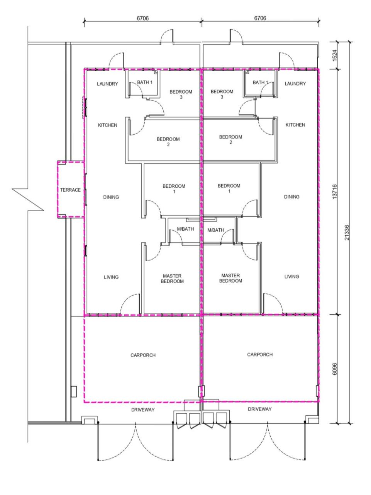

(01) The gate: guarded, with a fence all round
Come home
Come home
to a quieter street.
123 single-storey superlink homes in Bandar Enstek, gated and guarded, 12 homes to an acre. From RM 459,900*
(02) Your street
Twelve homes to an acre. Room to park, room to breathe.
 Artist's illustration
Artist's illustration
22' × 70' lots
2 car parks each
Freehold, individual title
Iris, Type D1: a row of single-storey superlink homes, each with its own car porch.
(03) Your home
Four bedrooms, two bathrooms, all on one floor.
 Artist's illustration
Artist's illustration
Corner · 1,490 sq ft
The corner unit, drawn with its side terrace.
Intermediate
from RM 459,9001,430 sq ft
4 bed · 2 bath · 2 car parksEnd lot
from RM 479,9001,430 sq ft
4 bed · 2 bath · 2 car parksCorner
from RM 546,9401,490 sq ft
4 bed · 2 bath · 2 car parks
In every home: a solid main door with a digital lock, 2' × 2' floor tiles, smart-home features and a practical layout.

(04) The park
A park, a playground, a jogging track: for after school and after dinner.
 Artist's illustration
Artist's illustration
Badminton · takraw · gazebo
The community park, with a walking trail through the green.
 Artist's illustration
Artist's illustration
Children's playground
- Guard house and perimeter fence
- Children's playground
- Badminton court, takraw and gazebo
- Walkway and jogging track
- Outdoor gym
- Parcourse
(→) Price & a viewing
From RM 459,900*
Come and see the street.
- Intermediate22' × 70' · 1,430 sq ft
- RM 459,900
- End lot22' × 70' · 1,430 sq ft
- RM 479,900
- Corner1,490 sq ft
- RM 546,940
- Freehold, with an individual title
- Easy ownership scheme; terms to be confirmed
- Bandar Enstek, Negeri Sembilan, on the KLIA–Seremban corridor. Drive times to be confirmed.